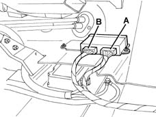

5505A multi-function components
- Path
- Descriptions > 55 ELECTRICAL EQUIPMENT > 5505 ELECTRICAL CIRCUIT FOR INSTRUMENTS/INDICATORS > 5505A multi-function components
- Kind
- system description
- Applies to
- all engines; all production periods
- Interactive page
- https://sloeber94.github.io/elrnDB-fMltpl/en/#/2888285
Applies to: all engines; production: da 09/03, da 04/02 a 08/03
SPECIFCATIONS
INTEGRATED MULTISERVICE CONTROL UNIT
A single, integrated electronic control unit located beneath the facia in a central position next to the air bag manages a set of functions and controls relating to electrical devices in integrated manner:
- front electric window operation
- door lock/release;
- door open check function
- tail-gate release;
- timed lighting of courtesy lights
- timed boot lighting
Composition
Control unit pin-out
Location of control unit and connections

Connector A
Pin | Signal |
|---|---|
relay | Supply to passenger side window motor - up |
relay | Passenger side window motor control - down |
3 | Supply to passenger side window motor - down |
4 | Passenger window earth |
5 | Passenger side window control from driver's side - down |
6 | Passenger side window motor control - up |
7 | Output for door open check warning light |
8 | Driver's side window motor supply - up |
9 | Driver's side window motor supply - down |
10 | Driver's side window control - up |
11. | Driver's side window control - down |
12. | Command (locking) from remote control |
13 | Command (release) from the remote control |
14 | Vehicle speed signal input |
15 | +30 power source for driver side window |
16 | +30 power source for passenger side window |
17 | Input from boot switch |
18 | Passenger side window control from driver's side - up |
19 | Boot opening relay feed |
20 | Driver's window earth |
Connector B
Pin | Signal |
|---|---|
relay | Rear courtesy light timed supply |
relay | Input from front door switch driver's side for interior lights |
3 | Input from front door switch passenger side for interior lights |
4 | Central locking motors supply - release |
5 | Central locking motors supply - lock |
6 | N.C. |
7 | Supply + 15 |
8 | Supply + 30 |
9 | Input from boot switch for interior lights |
10 | Front courtesy light timed supply |
11. | Boot light timed supply |
12. | Input from rear door switch left for interior lights |
13 | Earth |
14 | Boot release input, from external lock |
15 | Command for locking (from front locks - key or switches) |
16 | Command for locking unlocking (from front locks - key or switches) |
17 | boot release input, from interior button |
18 | Input from rear door switch right for interior lights |
Operating strategies
Door locking/release
The control unit controls the simultaneous operation of the lock motors on all four doors upon a control:
- from the key;
- from the front door switches (knobs);
- from the remote control
The control unit monitors lock status by means of signals received from switches located on the four locks (these signals are also used to time the interior lighting).
A lock command is issued only when all doors are properly closed and the front locks are released.
Conversely, a release command is issued only when the front catches are locked.
The control unit also carries out a series of safety checks:
- switch position is checked at the end of each operation. If this position does not agree with the action carried out (e.g. if a door is open), a repulsion command is issued, i.e. the opposite manoeuvre is carried out to realign all the locks.
- if the control unit detects several complete, consecutive lock/release manoeuvres - at least 8 within 20 seconds - the system cuts in to limit the manoeuvres: the system is inhibited in release position for 30 seconds.
- if battery voltage drops below 9 V during a lock/release operation, the system suspends the operation. If battery voltage is lower than 9 V at the outset, no command is issued.
Door open check function
The electronic control units sends the instrument panel an earth signal when any door or the tail-gate is opened (upon receipt of one of the signals used also for interior light timing).
Tail-gate lock release
The electronic control unit manages the operation of the actuator releasing the tailgate lock on a command from:
- an interior button located next to the driver's seat
- from the outside, via the key and rear lock
The command is only given if the vehicle is parked (i.e. with a speed signal below 4 km/h).
If the doors are locked, the command is possible only from inside and with the key ON. if the doors are released (open), the command can be given from outside or inside.
Front window operation
The control unit operates the front windows automatically, in accordance with the following system which depends on how the button is pressed:
- the operation is manual (the glass goes up/down only when the button is pressed) when the button is held down for 60 to 300 milliseconds;
- the operation is instead automatic (the glass continues to go up/down to the end of travel, even if the button is released) when the button is held down for over 300 milliseconds;
- if the button is pressed again during movement of the glass, the glass is stopped instantly;
- if the button is pressed for less than 60 milliseconds, it is ignored (it is considered to have been knocked accidentally).
The driver side window can operate automatically when raised or lowered the passenger side window only when lowered.
Both windows can only be operated when the ignition is ON.
It is possible, however, to operate the front windows, through the controls on the driver's door, even with the ignition switched OFF, as long as one of the front doors is not opened, and within 5 minutes of the ignition being switched OFF.
The electronic control unit also carries out a set of safety checks: stopping of the electric windows (switching off the electric supply to the motor) is determined when the glass reaches the end of travel at top or bottom, or if an obstacle blocks the glass. This is regulated by checking the motor current.
If there are faults on the electrical circuits, the control unit switches the system off temporarily, for example if:
- the motor control signals are interrupted or if the current uptake is below the usual values.
- there is a fault in the control buttons (short circuit, or buttons jammed in the pressed position).
Passenger compartment courtesy light timed lighting
The operation of the passenger compartment courtesy lights takes place coming on and going out gradually (dimmer function) and lasts about 3 seconds.
When any of the doors is opened, or if a door release operation takes place, all the front and rear courtesy lights are operated for a timed period, according to the following strategy:
- timed period of 6 seconds when the locks are released (using the key, front door knobs or remote control) if the ignition is not in the ON position
- a timed interval of 7 seconds when a previously opened door is closed again; timing is suspended when the ignition is turned on; this allows the driver to enter the car and insert the key in the ignition
- timed period of 6 seconds when the ignition is turned OFF
- timed interval of 3 minutes if one of the doors is left open (this function prevents the battery going flat if the car is left with a door open)
Each time one of the doors is opened, the calculation of the timed period in progress starts again from the beginning.
Boot timed lighting
When the boot is opened, a light is turned on for a timed interval of 20 minutes (this function ensures that the battery does not go flat if the car is left with the boot open).
Timer operation is suspended when the boot is closed.